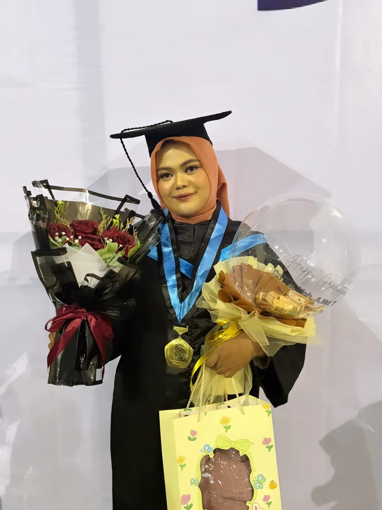

Pengembangan Web
Merancang dan membangun aplikasi web full-stack dengan struktur kode rapi, tampilan responsif, basis data terstruktur, dan pengamanan aplikasi (anti SQL Injection, CSRF, dan XSS).
HTML5CSS3JavaScriptPHP NativeMySQLBootstrap
Saya lulusan D-III Teknik Elektronika Politeknik Negeri Balikpapan dengan kemampuan di bidang kelistrikan, mekanik, administrasi data, jaringan, serta pengembangan web. Selama berkuliah, saya terbiasa dengan praktikum, mengerjakan proyek secara kelompok maupun mandiri, dan aktif di workshop, pameran karya, serta kompetisi inovasi. Saat magang multidisiplin di PT PLN (Persero), saya memeriksa dan merawat peralatan distribusi sesuai SOP, sekaligus mengelola data dan laporan pemeliharaan. Dari pengalaman itu saya membangun SIADA, sistem web untuk menganalisis data gangguan jaringan listrik. Saya teliti dalam mengelola data, disiplin pada prosedur, senang bekerja dalam tim, dan siap ditempatkan pada sistem kerja shift. Saya terbuka untuk peran di bidang teknik kelistrikan dan mekanik, administrasi data, maupun pengembangan web di Balikpapan, Kalimantan Timur, dan daerah lain di Indonesia.

Merancang dan membangun aplikasi web full-stack dengan struktur kode rapi, tampilan responsif, basis data terstruktur, dan pengamanan aplikasi (anti SQL Injection, CSRF, dan XSS).
Pemeliharaan preventif dan inspeksi jaringan distribusi 20 kV (gardu, LBS, recloser), verifikasi relay proteksi, serta perawatan komponen mekanik dan kelistrikan kendaraan sesuai SOP.
Pengelolaan dan rekapitulasi data operasional, penyusunan laporan harian dan bulanan, pengarsipan dokumen, serta pembuatan dashboard monitoring di Google Sheets.
Perancangan dan simulasi jaringan (Cisco Packet Tracer), instalasi jaringan nirkabel, konfigurasi dasar switch dan router, serta troubleshooting konektivitas.
Sertifikasi BNSP: Junior Web Developer (2025) dan Junior Network Administrator (2024).
Aplikasi web full-stack yang mengotomatisasi analisis data gangguan jaringan distribusi listrik, dari import data hingga laporan yang siap dipakai. Berawal dari dashboard monitoring di Google Sheets yang saya susun saat magang, lalu saya kembangkan menjadi sistem web utuh.
Alat bantu jalan bagi penyandang tunanetra berbasis Arduino Uno. Sensor ultrasonik HC-SR04 mendeteksi hambatan, sensor rain drop mengenali permukaan basah, dan modul GPS u-blox Neo-6M membantu pelacakan lokasi.
Rancangan usaha pakan ikan dari limbah ikan yang diolah dengan mesin pencacah bertenaga surya, sebagai solusi budidaya perikanan yang berkelanjutan dan hemat energi. Dikerjakan dalam tim lima orang.
Smart Composer, solusi ramah lingkungan yang mengolah sampah daun menjadi kompos agar limbah organik kembali bermanfaat.

Sertifikat Kompetensi BNSP, LSP Teknologi Digital. Agustus 2025.

Sertifikat Kompetensi BNSP, LSP Teknologi Digital. Oktober 2024.

Surat keterangan kompeten dari LSP Polibalikpapan, Juli 2026. Sertifikat resmi BNSP masih dalam proses.

Dewan Industri untuk Pendidikan Kaltim. SMK Negeri 6 Balikpapan, April 2021.

PT Astra International Tbk - Honda. Lulus ujian praktik kejuruan, April 2021.

PT Armada Tunasjaya Abadi, AHASS 14009. Jan - Mar 2020, hasil Baik.